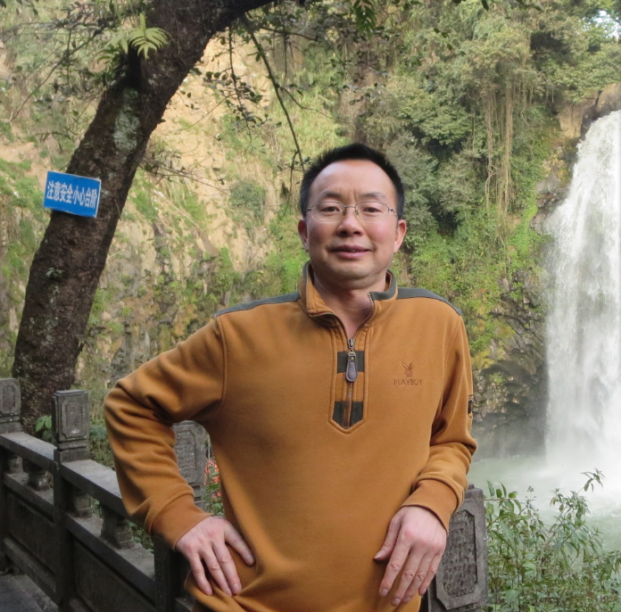
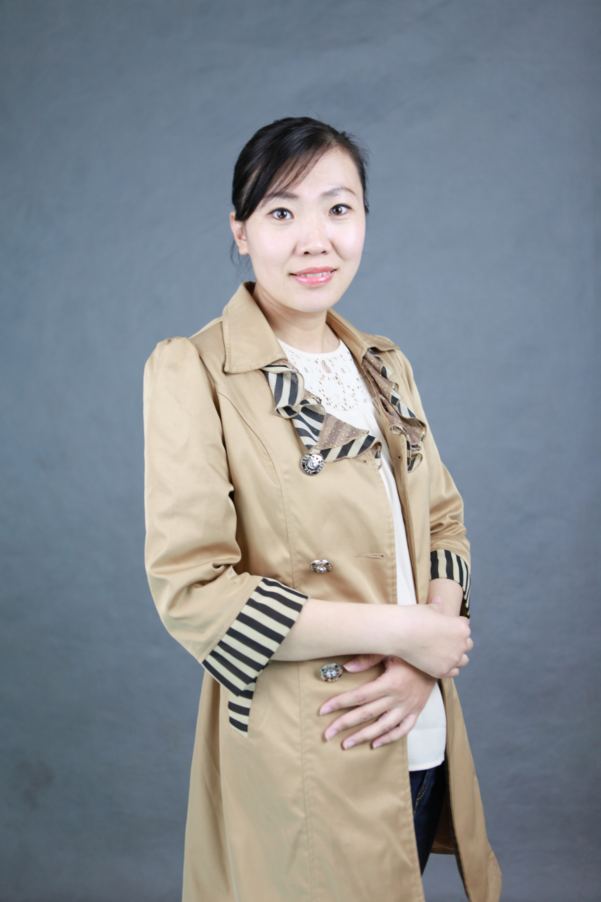

课程简介
本课程作为一门通识教育课程，通过系统地讲授马克思主义产生的社会历史条件、马克思主义的基本理论特征、社会作用和价值追求，讲授马克思主义理论的哲学基础、政治经济学基本规律和科学社会主义原理及其内在逻辑联系，表述马克思主义基本理论的主要内容与马克思主义的基本立场、观点和方法，从而为学生完整、准确的掌握马克思主义理论和树立正确的世界观、价值观和人生观提供理论基础。
本课程强调“教与学相结合、理论与实践相结合、线上与线下相结合”的教学理念，提倡“在比较中学习、在交流中学习、在阅读中学习、在思考中学习”的学习方法，在教学中除了在线教学外，还将辅助在线阅读、在线讨论、线下活动等方式，将传统以“教”为主的模式翻转为以“学”为主的模式，学生需要完成由“被动灌输”到“主动学习”的转化。
本课程作为一门通识教育课程，通过系统地讲授马克思主义产生的社会历史条件、马克思主义的基本理论特征、社会作用和价值追求，讲授马克思主义理论的哲学基础、政治经济学基本规律和科学社会主义原理及其内在逻辑联系，表述马克思主义基本理论的主要内容与马克思主义的基本立场、观点和方法，从而为学生完整、准确的掌握马克思主义理论和树立正确的世界观、价值观和人生观提供理论基础。
常见问题
改课程如何进行选课以及能否退课？
由于马原是必修课，我们已经将学生数据批量注册，并进行选课，你在开始上这门课之前，需要先用学号以及初始密码xuetangx123进行账户激活。该课不能退课。
这门课程的形式是什么样的？
教学内容包括每个单元包含若干个讲座序列。每个讲座序列由短视频和穿插在其中的小问题组成，方便你加深对于所学知识的理解。每个单元还包含一定量的阅读材料。
我是否需要实时观看课程讲座视频？
讲座视频和作业题将可根据你的方便安排学习，作业是有截止日期的。
这门课如何给分？
考核方式：闭卷考试+翻转课堂成绩构成：期末卷面成绩占总成绩50%+翻转课堂成绩占50%（违纪旷课每次扣除5分）翻转课堂考核方式本课程需要完成线上及线下（课堂面授）教学两部分才能获得翻转课堂的成绩。翻转课堂成绩构成比例：翻转课堂展示活动成绩占翻占50%观看线上视频占30%线上测试占20%。
这门课的预期工作量有多大？
这是一门工作量很大的课程，因为它涵盖了一些有深度并且充实的学习内容，此外，掌握这门课的唯一途径是通过亲自动手解决很多实际问题。选修这门课的学生通常每周花费平均3小时左右，主要包括阅读、作业和测验。
上这门课我是否需要其他资料？
我们将会提供阅读书单并尽可能提供线上阅读资源。
授课教师
-

刘震
清华大学 马克思主义学院 副教授
[查看全部]刘震，现为清华大学马克思主义学院副教授、院长助理。先后获得清华大学工学学士、经济学硕士、经济学博士学位；应用经济学专业博士后，台湾政治大学访问学者。刘震教授的主要研究方向为政治经济学基本理论、宏观经济理论和政策研究等。近几年，作为主要研究人员，承担并完成了国家社会科学基金、国家部委、国有企业、各级政府委托课题20余项。开设《政治经济学》、《政治经济学前沿问题研究》、《比较政治经济学：政府与市场》等专业课程，主讲《马克思主义基本原理》通识课程。刘震教授兼任清华大学经管学院中国公有资产研究中心执行主任，世界政治经济学学会理事，国际发展经济学学会会员，全国科技振兴城市经济研究会理事，中国青年政治经济学学者年会执行委员会委员、学术委员会委员、秘书长，北京马克思主义经济学青年论坛理事会理事，国资委新闻中心“专家媒体进央企”专家组成员，台湾“两岸公评网”特约撰稿人，台湾中华海峡政经文教交流协会顾问。
-

赵先明
成都大学 政治学院 教授
[查看全部]赵先明，成都大学政治学院教授，担任马克思主义基本原理概论等课程，主持、主研省级、市级和校级等课题10余项，公开发表学术论文近60篇，出版教材和著作10余部，获得省级、州级和校级等多项科研成果奖。
-

肖良
成都大学 政治学院 副教授
［全部收起］肖良，成都大学政治学院副教授，马克思主义基本原理教研室主任。从事高校政治理论教学多年。主讲课程：《邓小平理论》、《马克思主义基本原理概论》等。研究方向：邓小平理论。近年来在《毛泽东思想研究》、《农村经济》等核心刊物上发表多篇学术论文。
-
杜霞
成都大学 政治学院 讲师
杜霞：女，讲师，哲学硕士，2006年毕业于四川大学哲学系。主要研究方向包括中国哲学史、儒家哲学、现代新儒家研究。主要担任《马克思主义基本原理概论》、《国学经典导读》等课程。
-

马琳
成都大学 政治学院 讲师
[查看全部]马琳，硕士，成都大学政治学院讲师，主讲课程：马克思主义基本原理概论；研究方向：思想政治教育，曾在国内各刊物发表论文十余篇，参编教材两部，参研《公共基础课教学改革与质量提升的途径和方法研究—以“马克思主义基本原理概论”课为例》等课题。